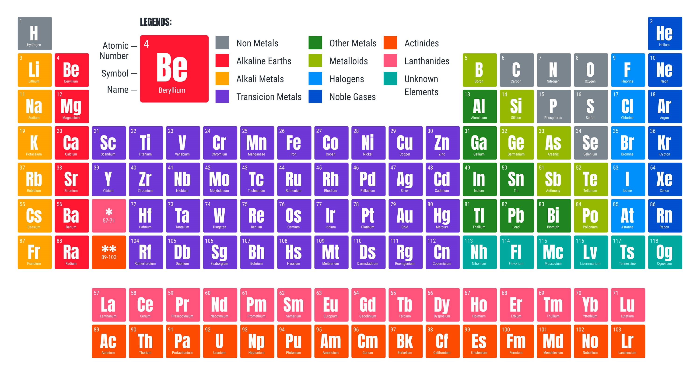

¿Qué son las propiedades periódicas?
Las propiedades periódicas son características que tienden a variar de manera predecible a lo largo de la
tabla periódica debido a la estructura electrónica de los átomos.
Aquí están algunas de las propiedades periódicas más importantes:
Radio Ionico
Radio Atomico
Afinidad Electronica
Electronegatividad
Energia de ionizacion

Descripción de cada una de las propiedades periódicas anteriormente nombradas:
-
Radio atómico:
- El radio atómico es la mitad de la distancia entre los núcleos de dos átomos adyacentes en una molécula o sólido cristalino.
- En general, el radio atómico tiende a disminuir de izquierda a derecha a lo largo de un período y aumentar de arriba abajo en un grupo.
- Esto se debe a la mayor carga nuclear efectiva (la fuerza neta que atrae a los electrones hacia el núcleo) en elementos con más protones en el núcleo, lo que hace que los electrones estén más cerca del núcleo.
-
Radio iónico:
- El radio iónico se refiere al tamaño de un ion (un átomo que ha ganado o perdido electrones) en comparación con su átomo neutro correspondiente.
- Los iones positivos (cationes) tienden a ser más pequeños que sus átomos neutros debido a la pérdida de electrones, mientras que los iones negativos (aniones) tienden a ser más grandes debido a la ganancia de electrones.
-
Energía de ionización:
- La energía de ionización es la cantidad de energía necesaria para eliminar un electrón de un átomo en estado gaseoso para formar un ion positivo (catión).
- La energía de ionización tiende a aumentar de izquierda a derecha a lo largo de un período y disminuir de arriba abajo en un grupo debido a la mayor carga nuclear efectiva.
-
Afinidad electrónica:
- La afinidad electrónica es la cantidad de energía liberada cuando un átomo en estado gaseoso captura un electrón para formar un ion negativo (anión).
- En general, la afinidad electrónica aumenta de izquierda a derecha a lo largo de un período y disminuye de arriba abajo en un grupo.
-
Electronegatividad:
- La electronegatividad es la capacidad de un átomo para atraer electrones en un enlace químico. Los átomos más electronegativos tienen una mayor afinidad por los electrones.
- La electronegatividad tiende a aumentar de izquierda a derecha a lo largo de un período y disminuir de arriba abajo en un grupo.